2026 瀨戶內藝術旅行 - 中華航空台北直飛高松全新提案
2026 瀨戶內國際藝術祭室內作品展期外首度定期開放！搭乘華航直飛高松，約 2.5 小時抵達，輕鬆探索瀨戶內海藝術島嶼、美麗海景、療癒旅程與美食文化。

· KAGAWA ·
開啟瀨戶內藝術之旅
2026 瀨戶內國際藝術祭
室內作品展期外首度定期開放！
- 藝術島嶼
- 美麗海景
- 療癒旅程
- 美食文化
2026 瀨戶內國際藝術祭室內作品展期外首度定期開放！搭乘華航直飛高松，約 2.5 小時抵達，輕鬆探索瀨戶內海藝術島嶼、美麗海景、療癒旅程與美食文化。
2026 瀨戶內國際藝術祭
室內作品展期外首度定期開放！
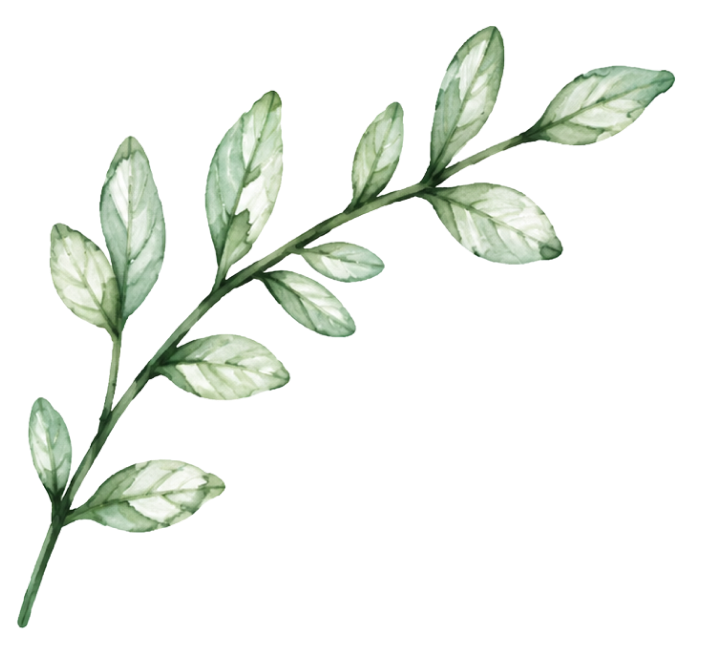
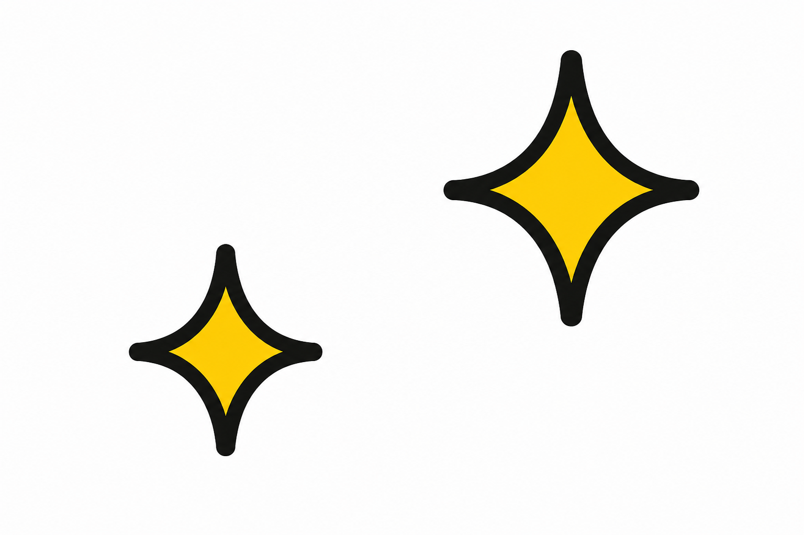
高松機場 ⇔ 高松市區
輕鬆往返，便利省時日本三大名園・米其林三星景點
感受庭園之美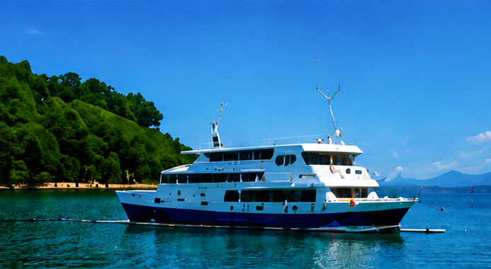
高松港 ⇔ 小豆島（土庄港）
跳島體驗・人氣藝術島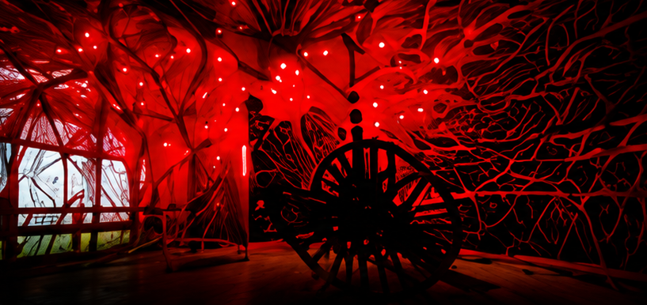
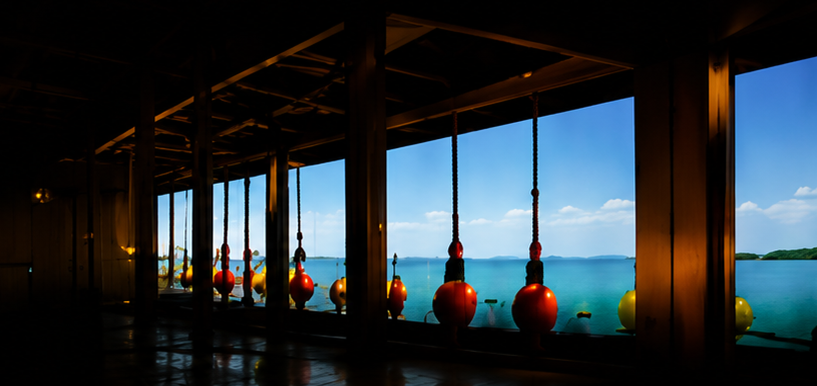
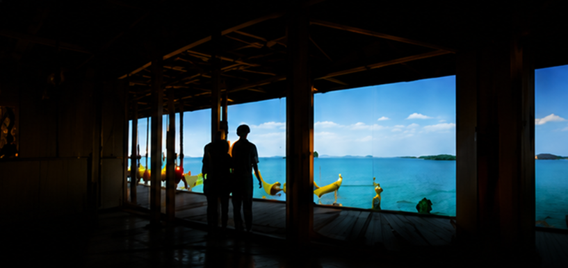
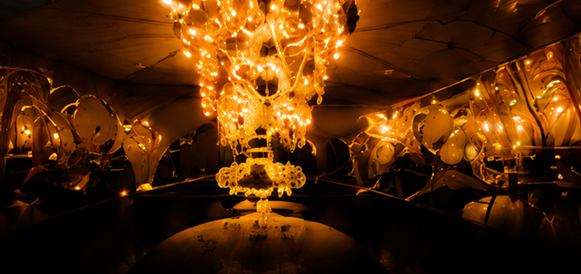
※ 以上為作品示意，實際開放作品與時間請依官方公告為準。
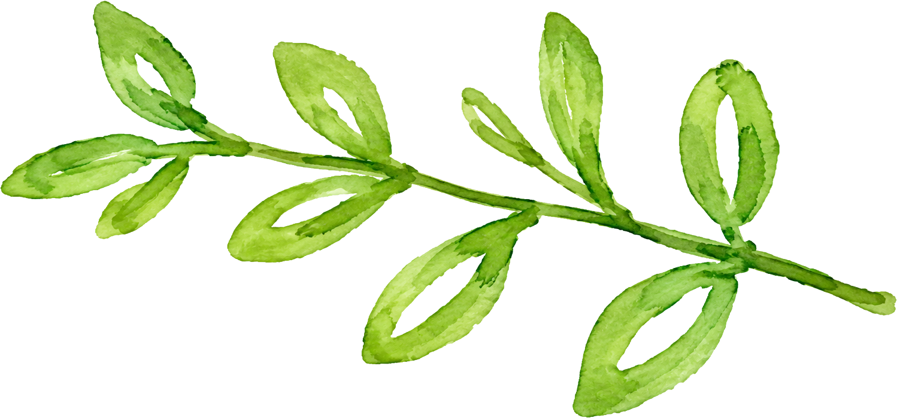
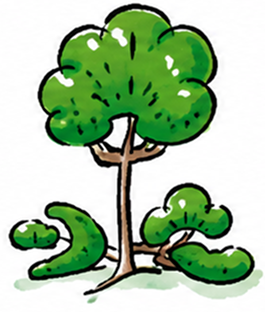
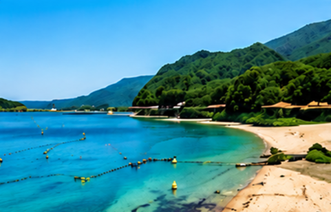
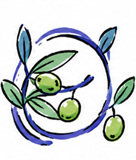
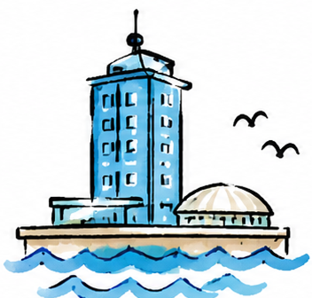
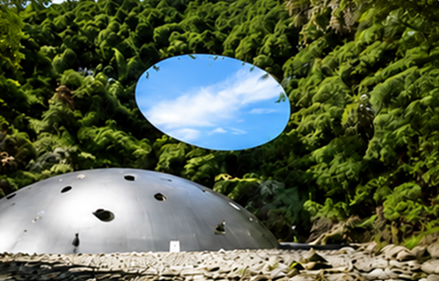
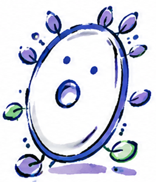
高松的景緻和氛圍很好拍，這趟總感受又好拍照，三大好禮超實用！下次還想再去小豆島住一晚。
最喜歡直島的藝術氛圍，走在島上像在看藝術散步，真的會讓人放慢腳步。
直飛高松真的省很多時間，4天行程剛剛好，景點和美食都很滿足，推薦給第一次去香川的朋友。
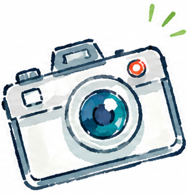
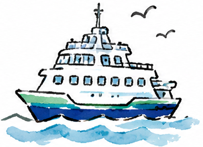
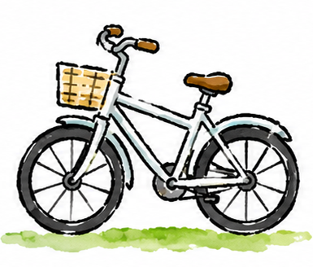